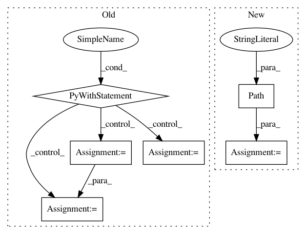

f2a35263aacacf10e1b2d622cd39c7c66ea39acb,src/python/pants/fs/fs_test.py,WorkspaceInConsoleRuleTest,test,#WorkspaceInConsoleRuleTest#,56
Before Change
return super().rules() + [RootRule(MessageToConsoleRule), workspace_console_rule]
def test(self):
with temporary_dir() as tmp_dir:
input_files_content = InputFilesContent((
FileContent(path="a.txt", content=b"hello"),
))
msg = MessageToConsoleRule(tmp_dir=tmp_dir, input_files_content=input_files_content)
output_path = str(Path(tmp_dir, "a.txt"))
self.assert_console_output_contains(output_path, additional_params=[msg])
contents = open(output_path).read()
self.assertEqual(contents, "hello")
//TODO(gshuflin) - it would be nice if this test, which tests that the MaterializeDirectoryResults value
// is valid, could be subsumed into the above @console_rule-based test, but it"s a bit awkward
// to get the MaterializeDirectoriesResult out of a @console_rule at the moment.
class FileSystemTest(TestBase):
def test_workspace_materialize_directories_result(self):
//TODO(/): at some point, this test should require that Workspace only be invoked from a console_role
workspace = Workspace(self.scheduler)
After Change
msg = MessageToConsoleRule(
input_files_content=InputFilesContent([FileContent(path="a.txt", content=b"hello")])
)
output_path = Path(self.build_root, "a.txt")
self.assert_console_output_contains(str(output_path), additional_params=[msg])
assert output_path.read_text() == "hello"
In pattern: SUPERPATTERN
Frequency: 3
Non-data size: 6
Instances
Project Name: pantsbuild/pants
Commit Name: f2a35263aacacf10e1b2d622cd39c7c66ea39acb
Time: 2019-11-25
Author: ericarellano@me.com
File Name: src/python/pants/fs/fs_test.py
Class Name: WorkspaceInConsoleRuleTest
Method Name: test
Project Name: quiltdata/quilt
Commit Name: 32f384c59f562061d0f506f3d5c3647420e1054f
Time: 2019-06-03
Author: dima@quiltdata.io
File Name: api/python/tests/integration/test_packages.py
Class Name: PackageTest
Method Name: test_remote_install
Project Name: quiltdata/quilt
Commit Name: 32f384c59f562061d0f506f3d5c3647420e1054f
Time: 2019-06-03
Author: dima@quiltdata.io
File Name: api/python/tests/integration/test_packages.py
Class Name: PackageTest
Method Name: test_local_install